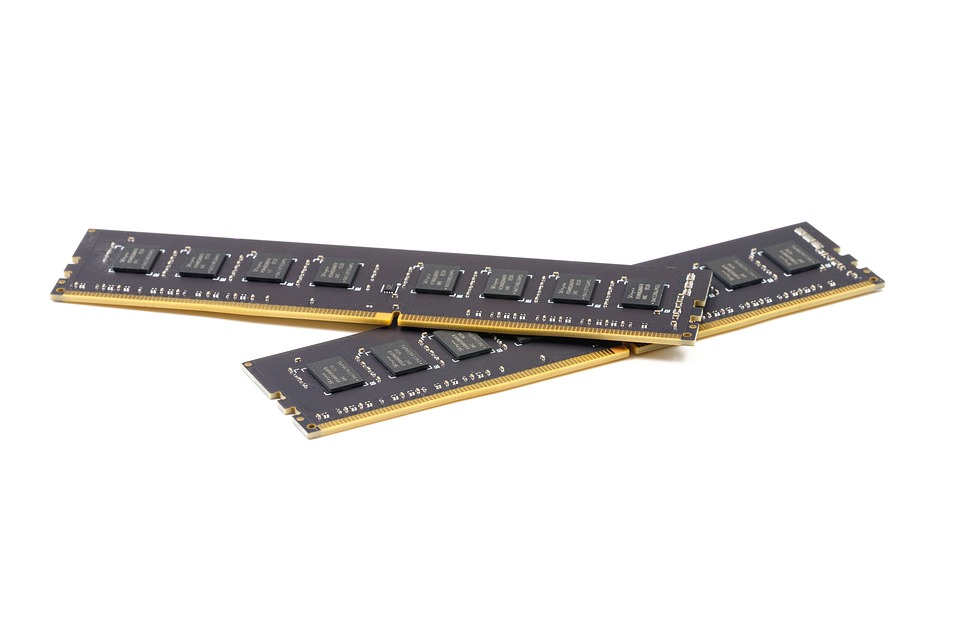
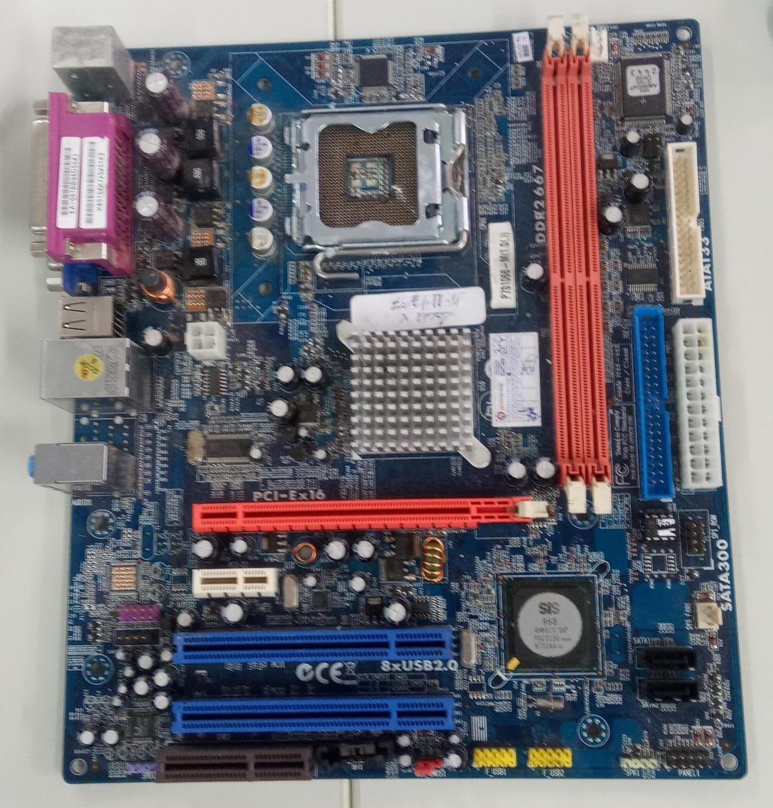
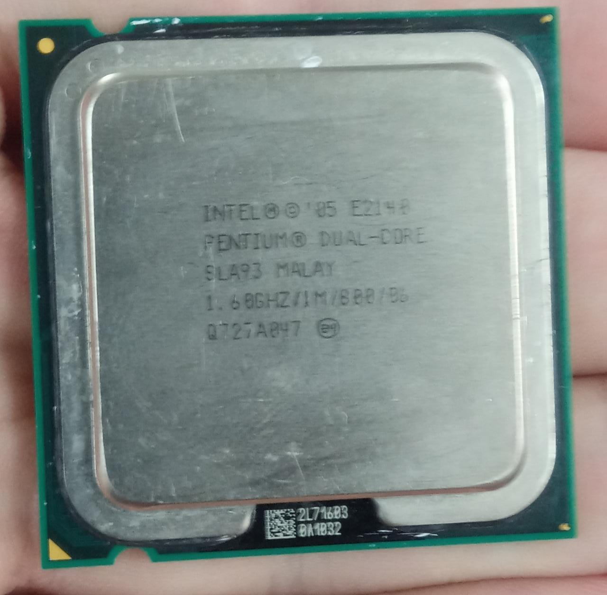
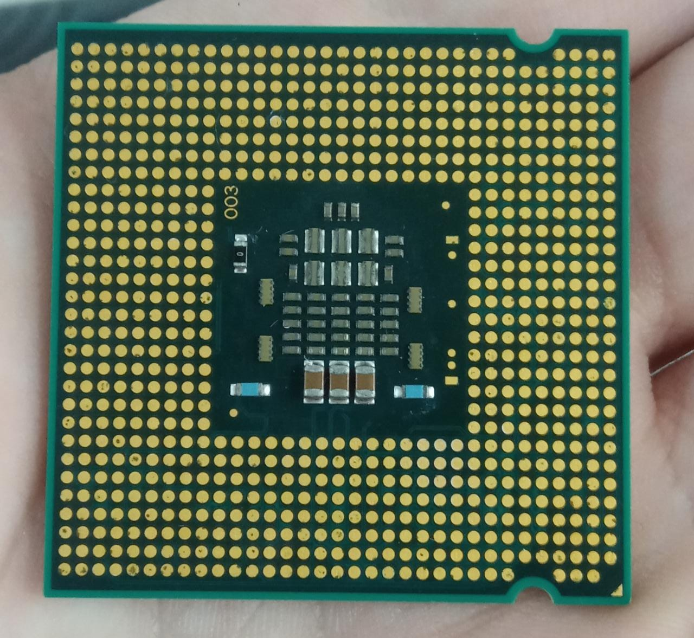
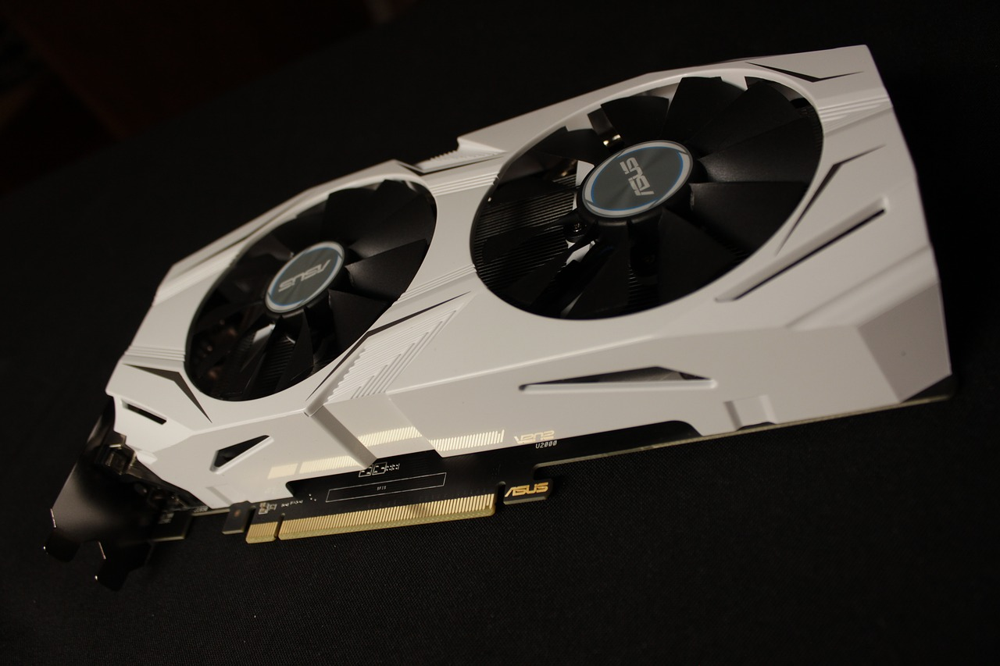
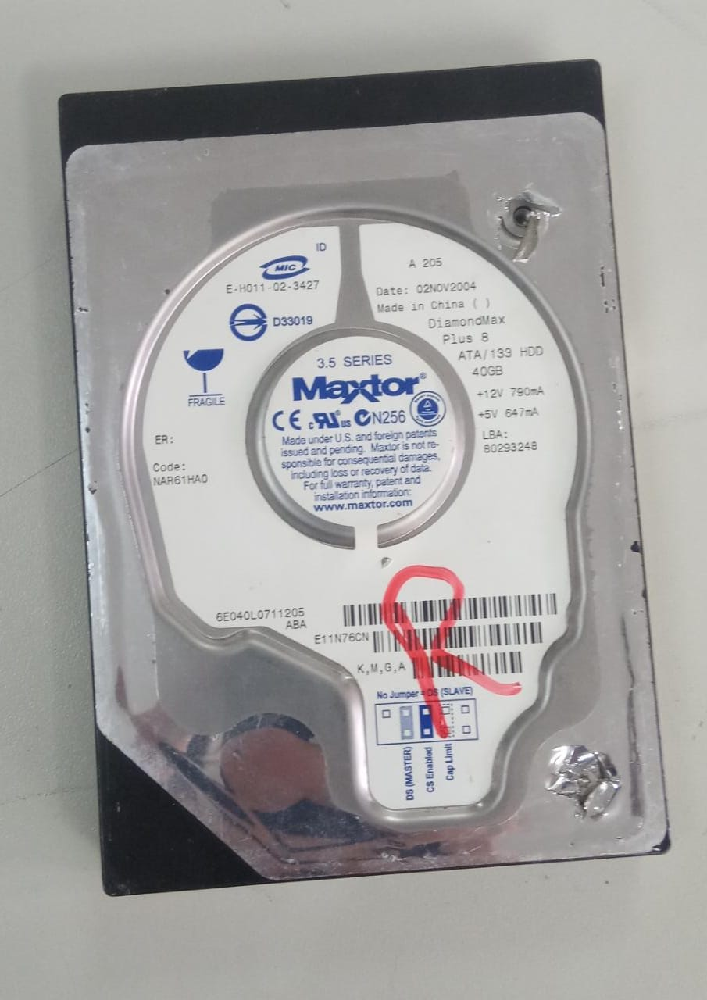
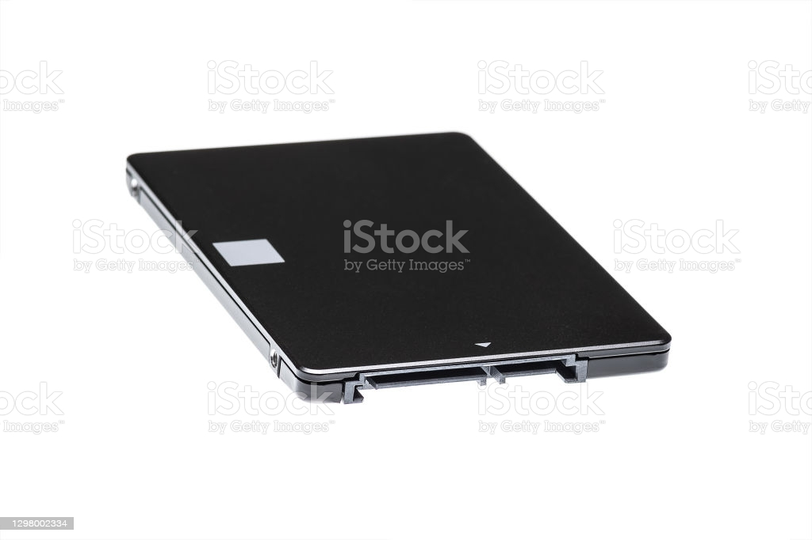

O que é e para que serve uma Memória RAM Em inglês, a sigla RAM significa “random access memory”, que traduzindo ao pé da letra seria “memória de acesso aleatório”. A memória RAM é responsável por dar agilidade e velocidade no funcionamento do sistema.  Sem ela, qualquer programa e aplicativo iria funcionar muito lentamente. Além de estar presente nos computadores, a peça também é item obrigatório em smartphones e videogames. Basicamente, a RAM guarda temporariamente toda a informação que o computador precisa para aquele momento ou para um futuro próximo. Isso é um fator que a diferencia de um HD, por exemplo, que é mais lento e faz um armazenamento para longo prazo.
O que é e para que serve uma Placa-Mãe Ela é o sistema que une todos os componentes de um computador, permitindo que eles funcionem de forma organizada. Sua peça dispõe de todos os caminhos e redes que permitem a troca de informação entre todas as outras: processadores, memórias, sistemas de armazenamento, placa de rede e tudo o mais. 
O que é e para que serve um Processador Um processador é uma espécie de microchip especializado. A sua função é acelerar, endereçar, resolver ou preparar dados, dependendo da aplicação.  Basicamente, um processador é uma poderosa máquina de calcular: Ela recebe um determinado volume de dados, orientados em padrão binário 0 e 1 e tem a função de responder a esse volume, processando a informação com base em instruções armazenadas em sua memória interna. 
O que é e para que serve uma Placa-de-vídeo A placa de vídeo consiste em um componente do computador ou notebook que tem a função de transmitir as imagens para o monitor.  São responsáveis por processar os dados do computador e transformá-los em imagem, além disso, as placas de vídeo são conhecidas pelo nome de processadores gráficos, por exercerem essas funções.
O que escolher entre HD e SSD. Em última análise, seu objetivo é o mesmo: Esses dispositivos de armazenamento preservam suas memórias, músicas, documentos e programas. Uma unidade de disco rígido (HDD) é um dispositivo de armazenamento antigo que usa pratos mecânicos e um cabeçote móvel de leitura/gravação para acessar dados. Todas as informações gravadas no HD são escritas ou lidas por processos magnéticos que utilizam os ímãs presentes na cabeça do braço de alumínio.  Uma unidade de estado sólido (SSD) é um tipo de dispositivo mais novo e rápido que armazena dados em chips de memória que podem ser acessados imediatamente.  Diferente dos HDs, cuja leitura das informações é feita de forma mecânica, os SSDs utilizam memórias Flash – as mesmas presentes em pendrives e cartões de memória - para armazenar os dados. Esse tipo de processo torna esses dispositivos mais resistentes, pois não há perda de dados em caso de batidas e movimentos bruscos. Além disso, um SSD não perde os seus dados em razão de interferências magnética.